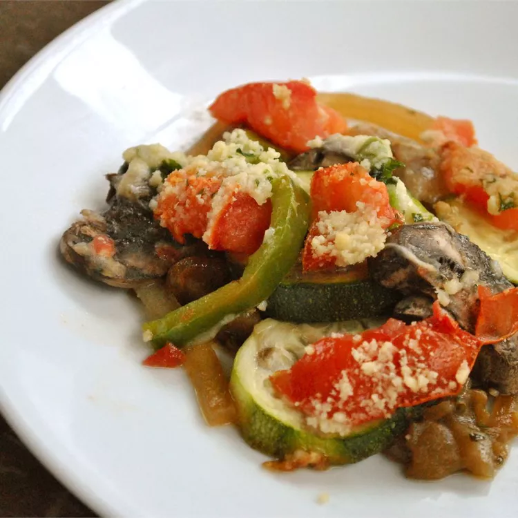

Ratatouille

This ratatouille recipe is my version of the terrific French vegetable stew made with fresh tomatoes and lots of summer vegetables. It's very versatile side dish and makes a delicious vegetarian main dish, too.
Ratatouille Ingredients
Wondering what is in ratatouille? Here are the ingredients you’ll need to make this classic French dish at home:
- Garlic and oil: This flavorful ratatouille recipe starts with fresh garlic cooked in olive oil.
- Produce: You’ll need an eggplant, two zucchini, two tomatoes, fresh mushrooms, an onion, and a red or green bell pepper.
- Seasonings: Season the ratatouille with dried parsley and salt.
- Parmesan: A cup of grated Parmesan cheese takes the ratatouille’s flavor up a notch.
How to Make Ratatouille
You’ll find the full, step-by-step recipe below—but here’s a brief overview of what you can expect when you make homemade ratatouille:
In a skillet, cook the garlic in olive oil. Add the eggplant, parsley, and salt.
Cook until the eggplant is tender, then spread the mixture in a prepared casserole dish and sprinkle with Parmesan.
Spread the zucchini on top and sprinkle with more cheese. Continue layering according to the instructions in Step 3.
Bake the ratatouille in the preheated oven until the vegetables are tender.